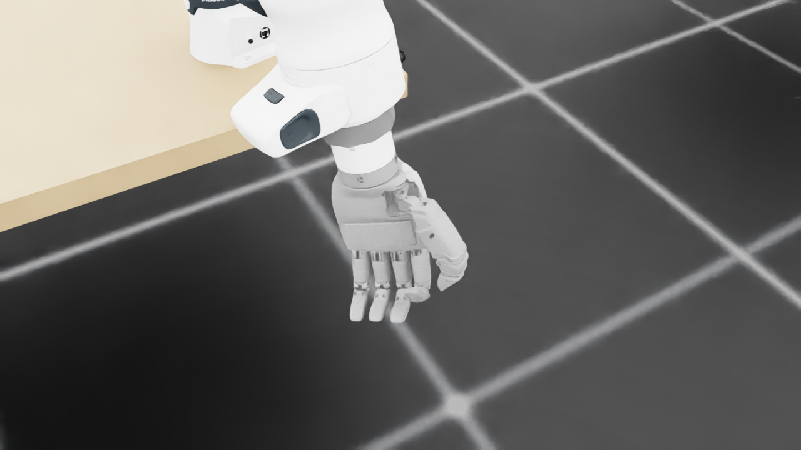
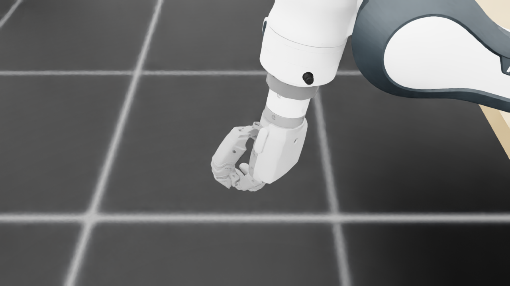
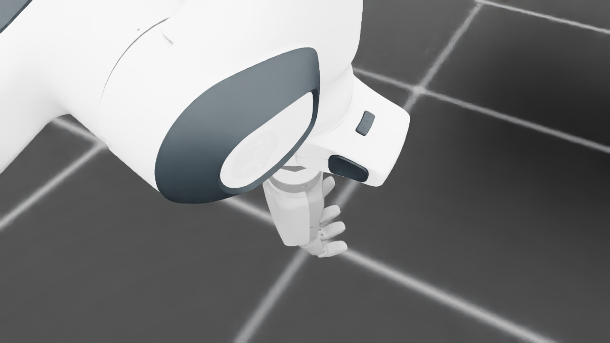
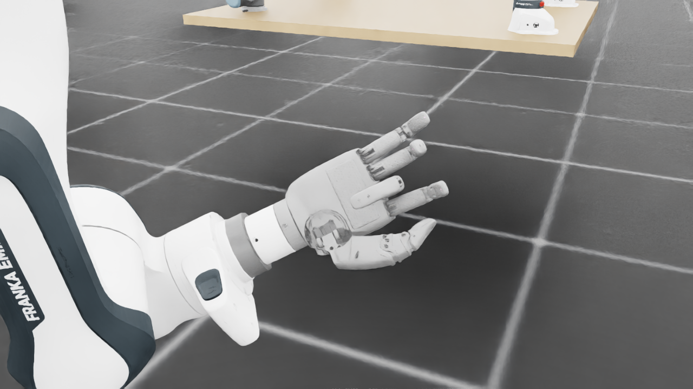
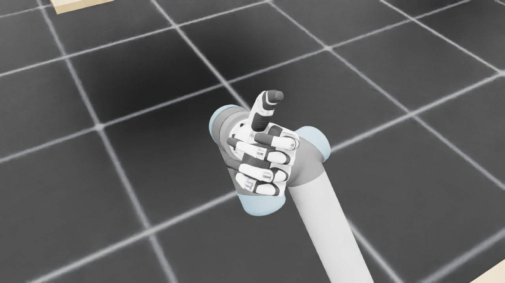
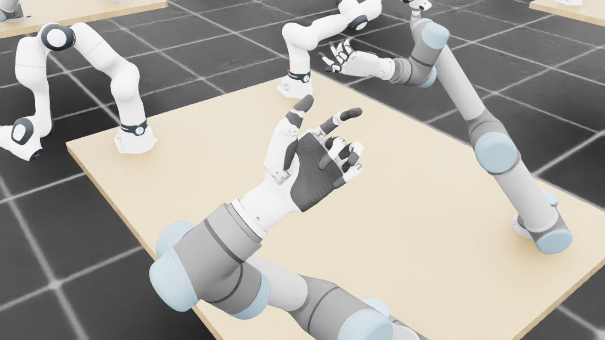
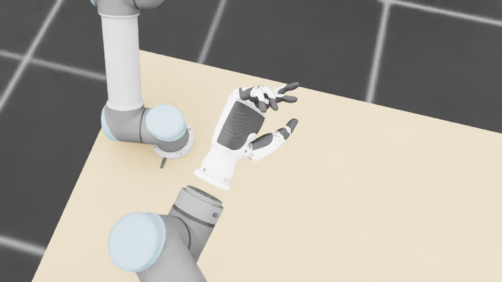
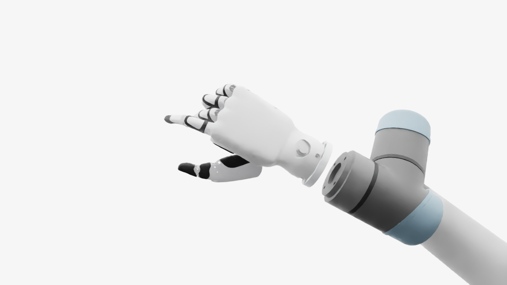
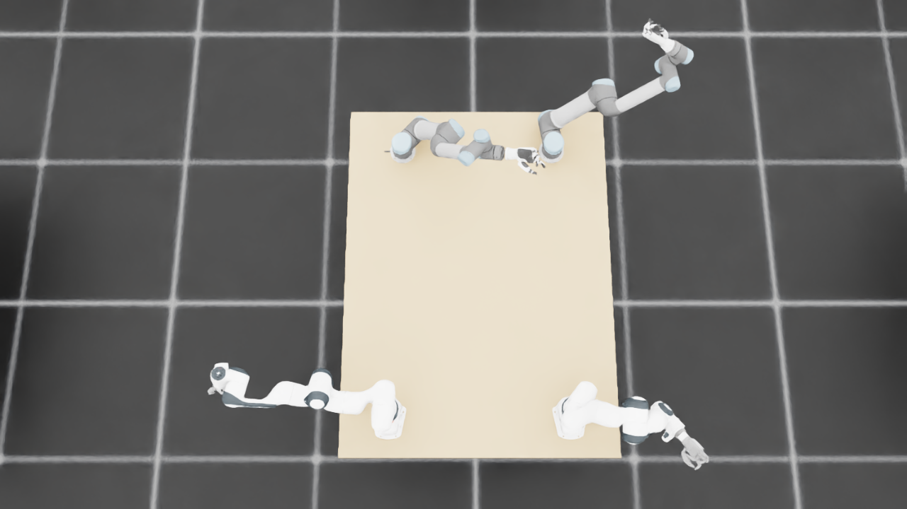
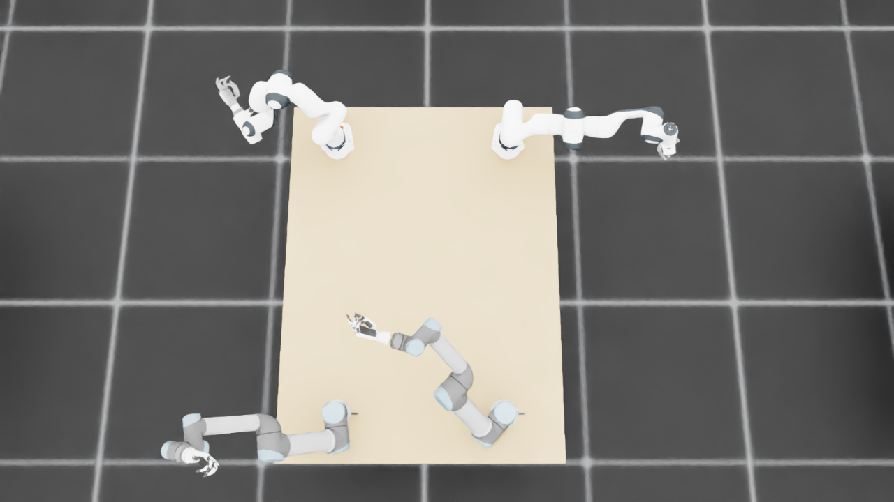

规定初始像素覆盖已通过独立数据验收，完整12步与物理安全未通过。Prescribed initial pixel coverage passes the independent DATA audit; full12-step and physical acceptance remain incomplete. Original1280×720; no edits/crop. Every image below is INITIAL, not micro1/final.
{"seed": 1, "proposal_id": 2054, "global_id": 16390, "family": 2}









{
"qualified": true,
"arms": {
"F_L": {
"qualified": true,
"palm_visual_peak_pixels": 19400,
"finger_family_peak_pixels": {
"thumb": 8708,
"index": 2484,
"middle": 2691,
"ring": 2777,
"little": 2791
},
"per_native_body_peak_pixels": {
"/World/envs/env_12/F_L/f2_hand/left_hand_base": 24230,
"/World/envs/env_12/F_L/f2_hand/left_index_1": 1612,
"/World/envs/env_12/F_L/f2_hand/left_middle_1": 1421,
"/World/envs/env_12/F_L/f2_hand/left_pinky_1": 1461,
"/World/envs/env_12/F_L/f2_hand/left_ring_1": 1403,
"/World/envs/env_12/F_L/f2_hand/left_thumb_1": 684,
"/World/envs/env_12/F_L/f2_hand/left_index_2": 872,
"/World/envs/env_12/F_L/f2_hand/left_middle_2": 1270,
"/World/envs/env_12/F_L/f2_hand/left_pinky_2": 1394,
"/World/envs/env_12/F_L/f2_hand/left_ring_2": 1496,
"/World/envs/env_12/F_L/f2_hand/left_thumb_2": 5928,
"/World/envs/env_12/F_L/f2_hand/left_thumb_3": 1359,
"/World/envs/env_12/F_L/f2_hand/left_thumb_4": 737
},
"native_body_visibility_gaps": [],
"all_native_hand_bodies_observed": true,
"full_mesh_coverage_certified": false,
"all_recorded_attempt_peak": {
"qualified": false,
"palm_visual_peak_pixels": 28777,
"finger_family_peak_pixels": {
"thumb": 10168,
"index": 4132,
"middle": 3703,
"ring": 2937,
"little": 3687
},
"per_native_body_peak_pixels": {
"/World/envs/env_12/F_L/f2_hand/left_hand_base": 34916,
"/World/envs/env_12/F_L/f2_hand/left_index_1": 3146,
"/World/envs/env_12/F_L/f2_hand/left_middle_1": 2444,
"/World/envs/env_12/F_L/f2_hand/left_pinky_1": 2337,
"/World/envs/env_12/F_L/f2_hand/left_ring_1": 2329,
"/World/envs/env_12/F_L/f2_hand/left_thumb_1": 684,
"/World/envs/env_12/F_L/f2_hand/left_index_2": 1622,
"/World/envs/env_12/F_L/f2_hand/left_middle_2": 1616,
"/World/envs/env_12/F_L/f2_hand/left_pinky_2": 1394,
"/World/envs/env_12/F_L/f2_hand/left_ring_2": 1496,
"/World/envs/env_12/F_L/f2_hand/left_thumb_2": 5928,
"/World/envs/env_12/F_L/f2_hand/left_thumb_3": 2319,
"/World/envs/env_12/F_L/f2_hand/left_thumb_4": 1911
},
"native_body_visibility_gaps": [],
"all_native_hand_bodies_observed": true,
"full_mesh_coverage_certified": false,
"qualification": false
},
"attempts": 9,
"decoded": 9
},
"F_R": {
"qualified": true,
"palm_visual_peak_pixels": 28511,
"finger_family_peak_pixels": {
"thumb": 10433,
"index": 3682,
"middle": 3357,
"ring": 3692,
"little": 3906
},
"per_native_body_peak_pixels": {
"/World/envs/env_12/F_R/f2_hand/right_hand_base": 34531,
"/World/envs/env_12/F_R/f2_hand/right_index_1": 2626,
"/World/envs/env_12/F_R/f2_hand/right_middle_1": 1469,
"/World/envs/env_12/F_R/f2_hand/right_pinky_1": 2440,
"/World/envs/env_12/F_R/f2_hand/right_ring_1": 2442,
"/World/envs/env_12/F_R/f2_hand/right_thumb_1": 702,
"/World/envs/env_12/F_R/f2_hand/right_index_2": 1414,
"/World/envs/env_12/F_R/f2_hand/right_middle_2": 2853,
"/World/envs/env_12/F_R/f2_hand/right_pinky_2": 1577,
"/World/envs/env_12/F_R/f2_hand/right_ring_2": 1510,
"/World/envs/env_12/F_R/f2_hand/right_thumb_2": 5706,
"/World/envs/env_12/F_R/f2_hand/right_thumb_3": 2154,
"/World/envs/env_12/F_R/f2_hand/right_thumb_4": 1886
},
"native_body_visibility_gaps": [],
"all_native_hand_bodies_observed": true,
"full_mesh_coverage_certified": false,
"all_recorded_attempt_peak": {
"qualified": true,
"palm_visual_peak_pixels": 28511,
"finger_family_peak_pixels": {
"thumb": 10433,
"index": 3682,
"middle": 4026,
"ring": 3692,
"little": 4085
},
"per_native_body_peak_pixels": {
"/World/envs/env_12/F_R/f2_hand/right_hand_base": 34531,
"/World/envs/env_12/F_R/f2_hand/right_index_1": 2626,
"/World/envs/env_12/F_R/f2_hand/right_middle_1": 1469,
"/World/envs/env_12/F_R/f2_hand/right_pinky_1": 2440,
"/World/envs/env_12/F_R/f2_hand/right_ring_1": 2442,
"/World/envs/env_12/F_R/f2_hand/right_thumb_1": 799,
"/World/envs/env_12/F_R/f2_hand/right_index_2": 1510,
"/World/envs/env_12/F_R/f2_hand/right_middle_2": 2853,
"/World/envs/env_12/F_R/f2_hand/right_pinky_2": 1650,
"/World/envs/env_12/F_R/f2_hand/right_ring_2": 1510,
"/World/envs/env_12/F_R/f2_hand/right_thumb_2": 5706,
"/World/envs/env_12/F_R/f2_hand/right_thumb_3": 2154,
"/World/envs/env_12/F_R/f2_hand/right_thumb_4": 1886
},
"native_body_visibility_gaps": [],
"all_native_hand_bodies_observed": true,
"full_mesh_coverage_certified": false,
"qualification": false
},
"attempts": 4,
"decoded": 4
},
"U_L": {
"qualified": true,
"palm_visual_peak_pixels": 10180,
"finger_family_peak_pixels": {
"thumb": 8206,
"index": 3230,
"middle": 4997,
"ring": 4881,
"little": 4162
},
"per_native_body_peak_pixels": {
"/World/envs/env_12/U_L/wrist_3_link": 37536,
"/World/envs/env_12/U_L/left_index_1": 1436,
"/World/envs/env_12/U_L/left_little_1": 2863,
"/World/envs/env_12/U_L/left_middle_1": 2744,
"/World/envs/env_12/U_L/left_ring_1": 2026,
"/World/envs/env_12/U_L/left_thumb_1": 234,
"/World/envs/env_12/U_L/left_index_2": 2582,
"/World/envs/env_12/U_L/left_little_2": 1322,
"/World/envs/env_12/U_L/left_middle_2": 2253,
"/World/envs/env_12/U_L/left_ring_2": 2855,
"/World/envs/env_12/U_L/left_thumb_2": 4908,
"/World/envs/env_12/U_L/left_thumb_3": 2015,
"/World/envs/env_12/U_L/left_thumb_4": 1209
},
"native_body_visibility_gaps": [],
"all_native_hand_bodies_observed": true,
"full_mesh_coverage_certified": false,
"all_recorded_attempt_peak": {
"qualified": false,
"palm_visual_peak_pixels": 11934,
"finger_family_peak_pixels": {
"thumb": 8206,
"index": 4295,
"middle": 4997,
"ring": 4881,
"little": 4162
},
"per_native_body_peak_pixels": {
"/World/envs/env_12/U_L/wrist_3_link": 37536,
"/World/envs/env_12/U_L/left_index_1": 2579,
"/World/envs/env_12/U_L/left_little_1": 2863,
"/World/envs/env_12/U_L/left_middle_1": 2744,
"/World/envs/env_12/U_L/left_ring_1": 2026,
"/World/envs/env_12/U_L/left_thumb_1": 415,
"/World/envs/env_12/U_L/left_index_2": 2582,
"/World/envs/env_12/U_L/left_little_2": 1486,
"/World/envs/env_12/U_L/left_middle_2": 2253,
"/World/envs/env_12/U_L/left_ring_2": 2855,
"/World/envs/env_12/U_L/left_thumb_2": 4908,
"/World/envs/env_12/U_L/left_thumb_3": 2015,
"/World/envs/env_12/U_L/left_thumb_4": 1342
},
"native_body_visibility_gaps": [],
"all_native_hand_bodies_observed": true,
"full_mesh_coverage_certified": false,
"qualification": false
},
"attempts": 9,
"decoded": 9
},
"U_R": {
"qualified": true,
"palm_visual_peak_pixels": 8952,
"finger_family_peak_pixels": {
"thumb": 9232,
"index": 3299,
"middle": 1508,
"ring": 1986,
"little": 2792
},
"per_native_body_peak_pixels": {
"/World/envs/env_12/U_R/wrist_3_link": 54817,
"/World/envs/env_12/U_R/right_index_1": 2209,
"/World/envs/env_12/U_R/right_little_1": 1601,
"/World/envs/env_12/U_R/right_middle_1": 1415,
"/World/envs/env_12/U_R/right_ring_1": 1781,
"/World/envs/env_12/U_R/right_thumb_1": 411,
"/World/envs/env_12/U_R/right_index_2": 1142,
"/World/envs/env_12/U_R/right_little_2": 1191,
"/World/envs/env_12/U_R/right_middle_2": 1045,
"/World/envs/env_12/U_R/right_ring_2": 1288,
"/World/envs/env_12/U_R/right_thumb_2": 5588,
"/World/envs/env_12/U_R/right_thumb_3": 2473,
"/World/envs/env_12/U_R/right_thumb_4": 1167
},
"native_body_visibility_gaps": [],
"all_native_hand_bodies_observed": true,
"full_mesh_coverage_certified": false,
"all_recorded_attempt_peak": {
"qualified": false,
"palm_visual_peak_pixels": 15652,
"finger_family_peak_pixels": {
"thumb": 9415,
"index": 3299,
"middle": 2566,
"ring": 2188,
"little": 2792
},
"per_native_body_peak_pixels": {
"/World/envs/env_12/U_R/wrist_3_link": 54817,
"/World/envs/env_12/U_R/right_index_1": 2209,
"/World/envs/env_12/U_R/right_little_1": 1601,
"/World/envs/env_12/U_R/right_middle_1": 1415,
"/World/envs/env_12/U_R/right_ring_1": 1781,
"/World/envs/env_12/U_R/right_thumb_1": 489,
"/World/envs/env_12/U_R/right_index_2": 1263,
"/World/envs/env_12/U_R/right_little_2": 1299,
"/World/envs/env_12/U_R/right_middle_2": 1461,
"/World/envs/env_12/U_R/right_ring_2": 1296,
"/World/envs/env_12/U_R/right_thumb_2": 5728,
"/World/envs/env_12/U_R/right_thumb_3": 2473,
"/World/envs/env_12/U_R/right_thumb_4": 1167
},
"native_body_visibility_gaps": [],
"all_native_hand_bodies_observed": true,
"full_mesh_coverage_certified": false,
"qualification": false
},
"attempts": 5,
"decoded": 5
}
},
"wide": {
"qualified": true,
"per_native_object_peak_pixels": {
"/World/envs/env_12/F_L/fr3_link0": 976,
"/World/envs/env_12/F_L/fr3_link1": 1152,
"/World/envs/env_12/F_L/fr3_link2": 2207,
"/World/envs/env_12/F_L/fr3_link3": 1325,
"/World/envs/env_12/F_L/fr3_link4": 1837,
"/World/envs/env_12/F_L/fr3_link5": 2489,
"/World/envs/env_12/F_L/fr3_link6": 1341,
"/World/envs/env_12/F_L/fr3_link7": 322,
"/World/envs/env_12/F_L/fr3_link8": 0,
"/World/envs/env_12/F_L/f2_hand/left_hand_base": 65,
"/World/envs/env_12/F_L/f2_hand/left_index_1": 0,
"/World/envs/env_12/F_L/f2_hand/left_middle_1": 0,
"/World/envs/env_12/F_L/f2_hand/left_pinky_1": 19,
"/World/envs/env_12/F_L/f2_hand/left_ring_1": 0,
"/World/envs/env_12/F_L/f2_hand/left_thumb_1": 5,
"/World/envs/env_12/F_L/f2_hand/left_index_2": 11,
"/World/envs/env_12/F_L/f2_hand/left_middle_2": 1,
"/World/envs/env_12/F_L/f2_hand/left_pinky_2": 31,
"/World/envs/env_12/F_L/f2_hand/left_ring_2": 17,
"/World/envs/env_12/F_L/f2_hand/left_thumb_2": 77,
"/World/envs/env_12/F_L/f2_hand/left_thumb_3": 4,
"/World/envs/env_12/F_L/f2_hand/left_thumb_4": 6,
"/World/envs/env_12/F_R/fr3_link0": 1070,
"/World/envs/env_12/F_R/fr3_link1": 1429,
"/World/envs/env_12/F_R/fr3_link2": 1651,
"/World/envs/env_12/F_R/fr3_link3": 2317,
"/World/envs/env_12/F_R/fr3_link4": 1821,
"/World/envs/env_12/F_R/fr3_link5": 850,
"/World/envs/env_12/F_R/fr3_link6": 913,
"/World/envs/env_12/F_R/fr3_link7": 564,
"/World/envs/env_12/F_R/fr3_link8": 95,
"/World/envs/env_12/F_R/f2_hand/right_hand_base": 658,
"/World/envs/env_12/F_R/f2_hand/right_index_1": 27,
"/World/envs/env_12/F_R/f2_hand/right_middle_1": 42,
"/World/envs/env_12/F_R/f2_hand/right_pinky_1": 61,
"/World/envs/env_12/F_R/f2_hand/right_ring_1": 43,
"/World/envs/env_12/F_R/f2_hand/right_thumb_1": 19,
"/World/envs/env_12/F_R/f2_hand/right_index_2": 37,
"/World/envs/env_12/F_R/f2_hand/right_middle_2": 60,
"/World/envs/env_12/F_R/f2_hand/right_pinky_2": 33,
"/World/envs/env_12/F_R/f2_hand/right_ring_2": 41,
"/World/envs/env_12/F_R/f2_hand/right_thumb_2": 91,
"/World/envs/env_12/F_R/f2_hand/right_thumb_3": 46,
"/World/envs/env_12/F_R/f2_hand/right_thumb_4": 35,
"/World/envs/env_12/U_L/base_link": 294,
"/World/envs/env_12/U_L/shoulder_link": 1154,
"/World/envs/env_12/U_L/upper_arm_link": 4714,
"/World/envs/env_12/U_L/forearm_link": 3679,
"/World/envs/env_12/U_L/wrist_1_link": 481,
"/World/envs/env_12/U_L/wrist_2_link": 617,
"/World/envs/env_12/U_L/wrist_3_link": 916,
"/World/envs/env_12/U_L/left_index_1": 74,
"/World/envs/env_12/U_L/left_little_1": 35,
"/World/envs/env_12/U_L/left_middle_1": 31,
"/World/envs/env_12/U_L/left_ring_1": 72,
"/World/envs/env_12/U_L/left_thumb_1": 0,
"/World/envs/env_12/U_L/left_index_2": 75,
"/World/envs/env_12/U_L/left_little_2": 19,
"/World/envs/env_12/U_L/left_middle_2": 72,
"/World/envs/env_12/U_L/left_ring_2": 85,
"/World/envs/env_12/U_L/left_thumb_2": 79,
"/World/envs/env_12/U_L/left_thumb_3": 44,
"/World/envs/env_12/U_L/left_thumb_4": 41,
"/World/envs/env_12/U_R/base_link": 288,
"/World/envs/env_12/U_R/shoulder_link": 1095,
"/World/envs/env_12/U_R/upper_arm_link": 4034,
"/World/envs/env_12/U_R/forearm_link": 2878,
"/World/envs/env_12/U_R/wrist_1_link": 741,
"/World/envs/env_12/U_R/wrist_2_link": 259,
"/World/envs/env_12/U_R/wrist_3_link": 1075,
"/World/envs/env_12/U_R/right_index_1": 19,
"/World/envs/env_12/U_R/right_little_1": 80,
"/World/envs/env_12/U_R/right_middle_1": 8,
"/World/envs/env_12/U_R/right_ring_1": 26,
"/World/envs/env_12/U_R/right_thumb_1": 15,
"/World/envs/env_12/U_R/right_index_2": 54,
"/World/envs/env_12/U_R/right_little_2": 49,
"/World/envs/env_12/U_R/right_middle_2": 46,
"/World/envs/env_12/U_R/right_ring_2": 57,
"/World/envs/env_12/U_R/right_thumb_2": 140,
"/World/envs/env_12/U_R/right_thumb_3": 50,
"/World/envs/env_12/U_R/right_thumb_4": 29,
"/World/envs/env_12/TableF": 91283,
"/World/envs/env_12/TableU": 93815
},
"arm_peak_pixels": {
"F_L": 11419,
"F_R": 10710,
"U_L": 12352,
"U_R": 10755
},
"table_peak_pixels": {
"TableF": 91283,
"TableU": 93815
},
"critical_body_peak_pixels": {
"/World/envs/env_12/U_L/forearm_link": 3679,
"/World/envs/env_12/U_L/wrist_2_link": 617,
"/World/envs/env_12/U_R/forearm_link": 2878,
"/World/envs/env_12/U_R/wrist_2_link": 259
}
},
"raw_attempt_count": 67,
"PNG_count": 67,
"angle_records": 67,
"max_actual_angle_identity_error_deg": 0.0,
"held_snapshot_checks": 1818,
"universal_visibility_impossible": false,
"full_mesh_coverage_certified": false
}